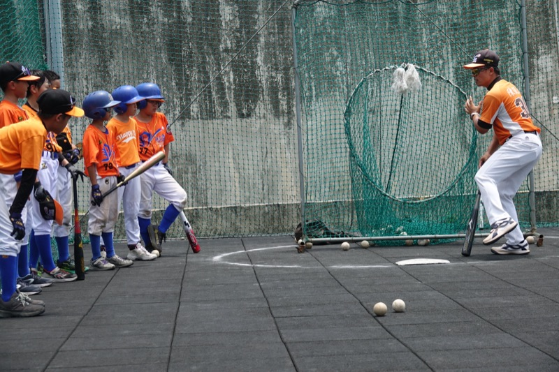
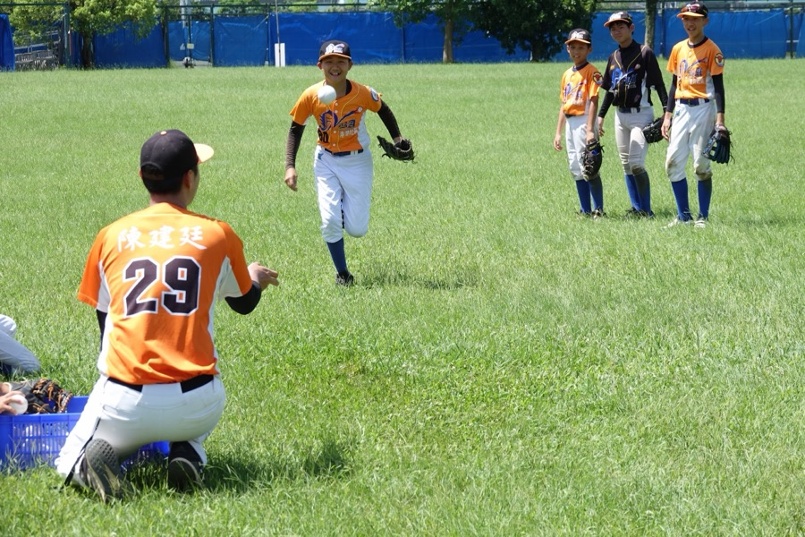

孩子在球隊練球，時間大多花在團體項目，很多小地方來不及一個一個修。港湖特訓班補的就是這段，教練多花一點時間看孩子，讓他知道自己卡在哪裡、要怎麼改。下面是我們上課最在意的七件事，大部分都能在運動科學的研究裡找到根據，出處列在這一頁最後，想多了解也可以點進文章看！
很多孩子練得很勤，打不好就多揮幾百下，傳不準就多傳幾十顆。可是動作本身有問題的話，練越多，只是把錯的動作練得更熟。
那把問題講清楚，孩子就會改了嗎？
美國的 Fleisig 等人（2018）追蹤做過 3D 動作分析的投手，有數據、有專家一對一解釋，一年後真的改掉的動作缺點只有 44%，這件事我們寫在〈講了就會改？一年後只改了 44%〉。
所以在港湖特訓班，我們會先陪孩子把問題找出來，再告訴他下一球可以怎麼做，嘴巴講清楚只是第一步，動作要真的改，靠的是設計好的練習，也需要時間。
這是我們上課很常問的一句話，孩子講得出原因，下一球就知道要調整什麼。
上課的前幾球，教練通常話不多。孩子怎麼站、怎麼準備、球來的時候眼睛看哪裡，這些都要先看清楚，才知道問題出在哪一環。還沒看清楚就急著糾正，常常只修到表面。
我們也不會拿一個標準姿勢去對，每個人的揮棒本來就不太一樣，我們先看地基穩不穩，再看球打出去的品質。
研究怎麼說Gray（2020）分析 80 名高中打者訓練前後的揮棒，練完之後，揮棒各階段之間更會互相補，前面的時間可以不一樣，越接近擊球，時間反而越準。Matsuo 等人（2020）在快速球投手身上也看到，關節之間的變化會互相調整，讓手的動作維持一致。
一口氣講五個重點，孩子一個都記不住。我們會挑當下最關鍵的那一項，用一兩句話講完，讓他下一球馬上可以試。等這件事做穩了，再談下一件。
能用一句比喻講完更好，像練下半身蓄力的時候，我們會說「屁股往後貼牆壁」，比講髖關節要彎幾度好記多了！
研究怎麼說Lam 等人（2009）的籃球投籃實驗裡，學一句比喻的人，在一邊投籃一邊倒數的時候，表現沒有掉下來，背一串技術要點的人卻掉了。
「手臂要甩開」換成「投到那個手套」，「不要撈」換成「把球打過二壘手頭上」。
同一個動作，提醒的說法不同，效果也不一樣，把注意力放在目標上，孩子比較容易做出來。
研究怎麼說Wulf 和 Lewthwaite（2016）整理動作學習的研究，把注意力放在動作要達成的目標上，對表現和學習都比較有幫助。荷蘭的 van der Graaff 等人（2018）觀察投球教練上課，有引導注意力的話裡，講外部目標的只有 31%。
有些動作用講的怎麼講都不對，做一次給他看反而三秒就懂。示範完換孩子做，做完再回饋，一來一往，比單方面講解快很多。
有時候連講都不用講，像在打擊區旁放一面斜的擋網，揮棒路線太繞就會打到網，孩子自己會找到比較好的路。
研究怎麼說Giblin 等人（2015）請高水準的青少年網球選手照指令改發球動作，選手覺得自己改了一點點的時候，儀器常常量不出差別。國內陳建霖等人（2026）讓 12 名大學投手練牽制時，用自己腳掌的大小限制能移動的範圍，練完之後牽制的時間有效縮短，也是讓選手在環境裡自己找出動作。

太簡單沒有東西可以學，太難也學不進去。我們大約抓十次成功六、七次，一直成功就加一點難度，一直失敗就先退一步。
所以同一堂課裡，每個孩子練的內容可能不一樣，這是正常的！
研究怎麼說Guadagnoli 和 Lee（2004）提出「挑戰點」的概念，練習太簡單，身體得不到新的資訊，太難，資訊又多到處理不來，中間剛剛好的難度學得最多。
定點練得再漂亮，比賽時球不會乖乖飛到你面前。所以每堂課的後段，我們會把剛練的東西放回移動、距離和比賽情境裡，再練一次。
餵球的時候也會快慢混著來，不先講下一球是哪一種，孩子回到球隊，用得到的是這個版本。
研究怎麼說Gray（2017）讓 80 名美國高中打者練六週，依表現調整難度、加入變化的那一組，8 項測驗全部進步，也帶到了真實打擊和下一季的比賽。Hossner 等人（2016）的青少年足球實驗則提醒，變化太大反而不好，前後兩次只差一點點的安排學得更多。

一週上一兩堂課，加起來也才一兩個小時，課堂上改的東西能不能留下來，要看剩下那幾天有沒有練。
所以第一堂做完前測，我們會依孩子的弱項開一份回家作業，多半是幾分鐘就能做完的動作或體能項目，不會佔掉他的生活。下一堂上課教練會先確認完成狀況，再決定這堂課要往前推進，還是先把上一個動作做穩。
作業沒做，課堂上改的東西很容易在一週後就回到原點。
我們會一起討論課程內容和觀察重點，看動作的標準是一致的，所以孩子在特訓班改的東西，回到球隊團練不會變成另一套，教練之間也接得上。
我們不會、也沒辦法保證孩子上場，但如果他在球場上接得到、打得到、傳得準，機會本來就會跟著來，我們能幫的就是這部分。
特訓班是課後自費的額外訓練，與球隊的分隊、比賽名單及上場安排完全分開，有沒有參加，都不會影響孩子的上場機會，這點我們一開始就想講清楚。
比賽的時間很短，孩子腦袋裡的位置也有限，動作的提醒留到練習再說，場邊叫他的名字、幫他加油就好。
遇到爭議球，大人沉得住氣，孩子才比較能把專注力放在場上，想著下一球該怎麼準備。
研究怎麼說王宜民等人（2025）調查雙北 326 位參加社區棒球隊的國小學童，家人的支持最能預測孩子對棒球的熱情，預測力比老師和教練的支持都高。
不一定要，但如果孩子自己想練、或有某個項目卡住了，早一點把動作的底子打對，之後會省很多力氣。
我們也會依年齡調整強度，小的孩子重點放在動作與習慣，不會硬拉訓練量。
會先把難度降下來，我們的原則是，孩子要先做得到、感覺得到自己有進步，才有動力繼續，練到失去信心，那堂課就白上了。
訓練量與強度會依年齡和身體狀況調整，投球特別注意用量，上課前也請孩子先自行完成熱身，到場就能直接開始，也能減少受傷的機會。
先問清楚是用哪一支球棒、打 T 座還是餵球，條件不一樣，數字不能直接比。最好的比法是跟自己比，同一支球棒、同一種測法，每隔一段時間測一次，看他有沒有往上。
揮棒速度、擊球初速、仰角、攻擊角度，檢測報告上一排數字，到底要先看哪一個？這篇用白話整理這幾個數字代表什麼，以及看數字時最容易誤會的地方。
第 15 篇 2026.11.07 陳建廷 教練繼續閱讀 →來上課的孩子常被要求從跳箱跳下來、站穩 2 秒，跟揮棒看起來沒什麼關係。其實這是在練揮棒前那個「坐進去」的準備動作，先蹲得穩，揮棒才有力量可以用。
第 14 篇 2026.11.07 陳建廷 教練繼續閱讀 →前腳踩下去，是讓身體停住，還是讓球棒變快？大學打者的研究發現，前腳踩得越用力，揮棒速度通常越快；職業打者面對變速球被騙的時候，問題也常出在前腳太早出力。
第 13 篇 2026.11.07 陳建廷 教練繼續閱讀 →